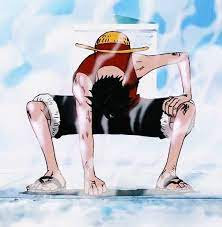
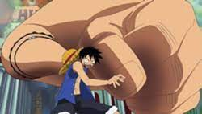
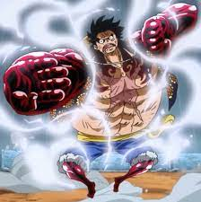
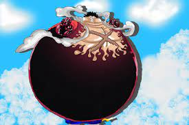
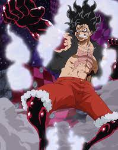
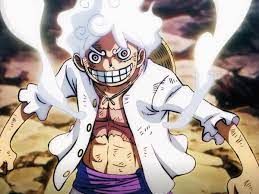

Personalidade. Luffy é retratado como um garoto relaxado, despreocupado e alegre. Ele tem um grande apetite, traço comum em protagonistas de mangás shōnen. Otimista e de bom coração, Luffy não é muito inteligente mas também não tão estúpido quanto outros pensam ao vê-lo.
Ele tem cabelos curtos e pretos, é magro porém definido, tem diversas cicatrizes com a que fica entre seu peito e sua barriga em formato de "X" e, atualmente usa uma camisa de botão vermelha com manga longa, shorts azul e um par de sandálias de palha. Luffy também tem seu icônico chapéu de palha, tanto que se tornou seu "Apelido" no mundo de One Piece.

Seu avô (Monkey D. Garp), chantageou Curly Dadan, uma criminosa e líder de uma família de criminosos conhecidos como "Família Dadan", a cuidar de Luffy e o filho de Gol D. Roger, Portgas D. Ace Luffy no início se desentendia com Ace mas eventualmente se tornaram "irmãos de criação" junto com um amigo de infância de Ace, Sabo, que Luffy conheceu por acaso enquanto perseguia Ace, antes de se tornarem amigos. Quando atingiu certa idade foi ao mar com o desejo de formar um bando mais incrível que de Shanks, "O Ruivo", que também teve grande influência em sua vida e na formação de seu caráter. Monkey D. Luffy também quer se tornar o "Rei dos Piratas", porém, o que talvez não saiba ou não ligue, é que ele está vivendo "A Grande Era dos Piratas". Ele não se importa com o quão difícil um objetivo é, se ele quer fazer, pouco importa se morrer no processo.
Após embarcar com sua tripulação, Luffy descobriu novas formas de aplicar seus poderes. O treinamento culminou na apresentação da Segunda Marcha (Gear 2) na batalha contra Blueno. Nesta técnica, Luffy consegue bombear o sangue em seu corpo mais rápido, aumentando a velocidade e mobilidade, assim como a força de seus ataques. Porém, essa forma consome muita energia e inimigos como Rob Lucci começam a notar isso.
A Terceira Marcha teve sua apresentação definitiva na batalha contra Rob Lucci. Nela, Luffy consegue inflar seu braço ao soprar o polegar, transferindo o ar pelos seus ossos, ganhando um tamanho superior ao de um gigante e passa a ter uma força avassaladora. No entanto, reduz a mobilidade.
Luffy desbloqueou a Quarta Marcha (Gear 4) na batalha contra Doflamingo, tendo sido desenvolvida durante o treinamento em Rusukaina. A técnica consiste em se inflar de forma semelhante à Terceira Macha, mas coberto com Busoshoku Haki, o que permite a criação de uma armadura. A Quarta Marcha também possui três sub-formas: Boundman, que o faz ficar quicando; Tankman, que torna seu tronco em forma de bola, permitindo usar seu corpo como arma; e Snakeman, onde Luffy eleva a altura sem inflar o torso, aumentando significativamente a sua velocidade e podendo atacar de todas as direções.
  A Quinta Marcha (Gear 5) é apresentada oficialmente quando Luffy desperta os poderes da Fruta da Borracha durante a batalha contra Kaido. Essa forma está ligada à verdadeira origem da fruta, que possui o nome do Deus-Sol Nika. Luffy alcança o ápice de sua força, velocidade e defesa. Não só isso: ele também pode se transformar como quiser, limitado apenas por sua imaginação, se tornando o Guerreiro da Libertação. Descrito como "O poder mais ridículo do mundo", Luffy passa a mostrar características "cartunescas" nas batalhas.
 "